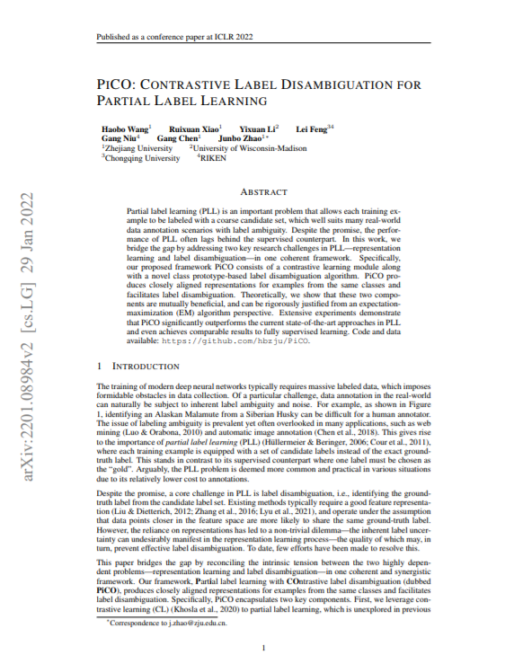
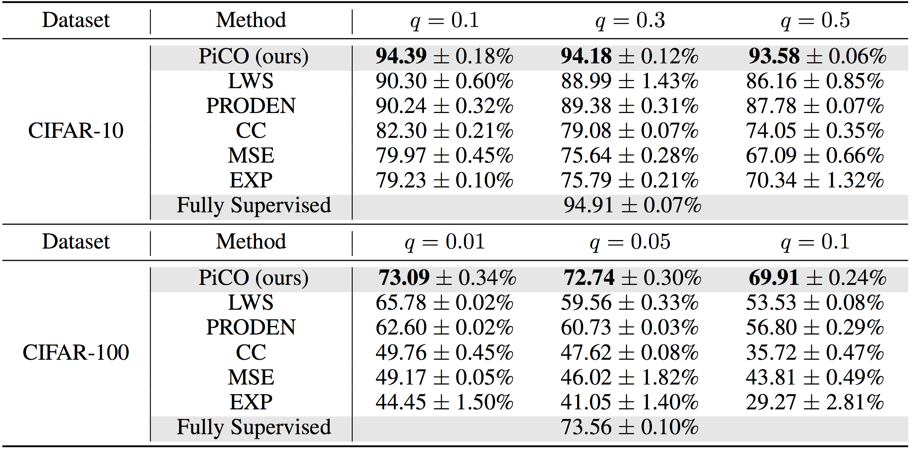
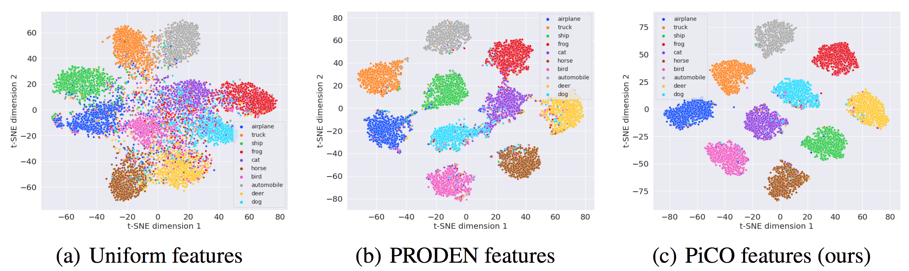

PiCO: Contrastive Label Disambiguation
for Partial Label Learning
|  | PiCO: Contrastive Label Disambiguation for Partial Label Learning Haobo Wang, Ruixuan Xiao, Yixuan Li, Lei Feng, Gang Niu, Gang Chen, Junbo Zhao International Conference on Learning Representations, ICLR 2022 (Oral, Top 1.59%). |
AbstractPartial label learning (PLL) is an important problem that allows each training example to be labeled with a coarse candidate set, which well suits many real-world data annotation scenarios with label ambiguity. Despite the promise, the performance of PLL often lags behind the supervised counterpart. In this work, we bridge the gap by addressing two key research challenges in PLL -- representation learning and label disambiguation -- in one coherent framework. Specifically, our proposed framework PiCO consists of a contrastive learning module along with a novel class prototype-based label disambiguation algorithm. PiCO produces closely aligned representations for examples from the same classes and facilitates label disambiguation. Theoretically, we show that these two components are mutually beneficial, and can be rigorously justified from an expectation-maximization (EM) algorithm perspective. Extensive experiments demonstrate that PiCO significantly outperforms the current state-of-the-art approaches in PLL and even achieves comparable results to fully supervised learning. |
Method OverviewFigure: Illustation of PiCO architecture. |
Experiments Table: Comparison with state-of-the-art methods on benchmark datasets. Figure: T-SNE visualization of the image representation on CIFAR-10 with q = 0.5. |
CitationIf you found any part of this code is useful in your research, please consider citing our paper: @article{wang2022contrastive,
title={Contrastive Label Disambiguation for Partial Label Learning},
author={Wang, Haobo and Xiao, Ruixuan and Li, Yixuan and Feng, Lei
and Niu, Gang and Chen, Gang and Zhao, Junbo},
journal={Proceedings of the International Conference on Learning Representations},
year={2022}
}
|